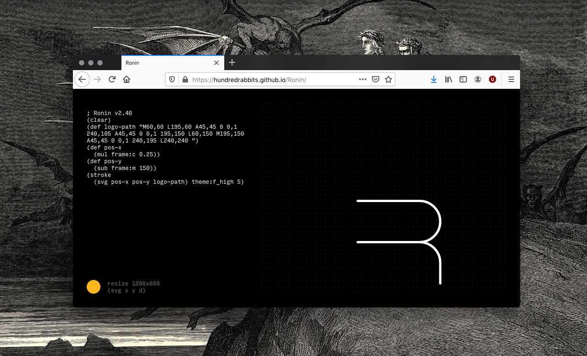
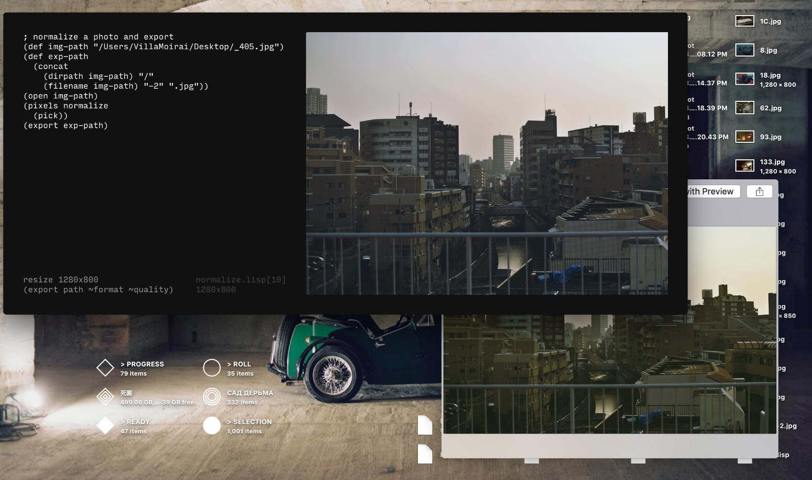

Ronin
A design graphic tool

Ronin is an image processing tool.
The application interprets a dialect of LISP to automate simple graphical tasks, like resizing, cropping, coloring, and generating procedural imagery. You can look at these example files to better understand how this all works.
The first version of Ronin was produced in Ensenada, Mexico in 2016 after Rekka's Macbook died. It was re-released later in 2019 in Japan.
Sustainability
We create our own tools, built light to reduce our energy use, also to lessen our dependence on closed-source applications we can't repair ourselves.
Read more about our design philosophy
Ronin

Ronin, reimagined as a creature.
Download
Web version
It is now possible to use Ronin in your browser, without the need to install it as an application.
The reason we did this, is because Apple plans to stop allowing the distribution of applications outside of the AppStore. Another reason is we want to ensure that users — us included — have access to these tools no matter what. We want our ecosystem of tools to be...
- Lightweight and simple.
- Always up-to-date.
- Usable across all platforms.
- Offline-first.
Donations
Because Ronin Live isn't available through a client, it is harder to receive donations. Donations mean we can spend time improving this tool, and offering support when needed.
Make a donation with...
Trailer
Tutorial
Watch the video above or follow the online workshop.
Visual
You can change the look and colour of Ronin. To do this, download themes from our itch.io page. You can view the colour palettes of each theme in the preview, once you find something you like, drag the file (.svg file) onto Ronin. The colours will change instantly.
These themes are part of the Ecosystem Theme, which means that you can apply a theme to any supported app (Dotgrid, Donsol, Orca and Left). Pull Requests are welcome, but please read our design philosophy first.
You can also create your own themes.
If you enjoy our content...
Support Us On Patreon